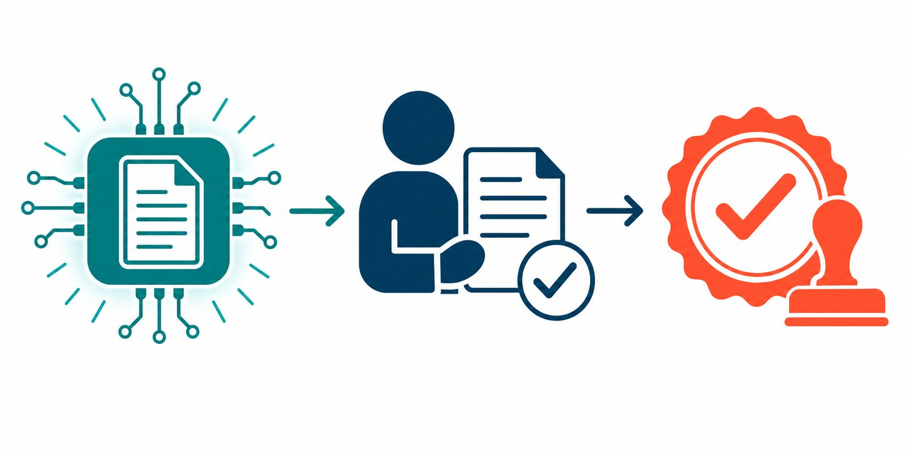

Key Takeaways
- On April 2, 2026, FDA's Center for Drug Evaluation and Research issued Warning Letter 320-26-58 to Purolea Cosmetics Lab. The letter includes a section headed "Inappropriate Use of Artificial Intelligence in Pharmaceutical Manufacturing."[1]
- The letter addresses how AI was used, not whether it may be used. It states: "If you use AI as an aid in document creation, you must review the AI generated documents to ensure they were accurate and actually compliant with CGMP." It cites the failure to do so under 21 CFR 211.22(c), the existing regulation on quality control unit responsibilities.[1][2]
- Purolea told investigators it used AI to create drug product specifications, procedures, and master production or control records, and it had not reviewed them for accuracy and CGMP compliance. When investigators found no process validation, the firm said the AI agent "never told you it was required." FDA described this as "overreliance on artificial intelligence."[1]
- FDA's Clinical Decision Support Software final guidance, issued January 29, 2026, addresses a related question in clinical care. One criterion for CDS software to fall outside the device definition is that it lets a health care professional independently review the basis for its recommendations, so the professional does not rely primarily on them.[3]
- Two 2025 reviews of AI regulation in drug manufacturing and development reach a similar view. One states that "AI/ML should augment rather than replace human expertise." The other warns that AI-generated inaccuracies "can lead to poor clinical decisions or non-compliance with regulatory requirements."[6][7]
Why This Enforcement Action Matters
On April 2, 2026, FDA issued a warning letter to Purolea Cosmetics Lab, whose drug manufacturing facility in Livonia, Michigan, made homeopathic drug products. Part of the letter deals with the firm's use of artificial intelligence to write its quality documents.[1]
The letter does not cite a new AI-specific rule. It cites an existing one. Under 21 CFR 211.22(c), the quality control unit "shall have the responsibility for approving or rejecting all procedures or specifications impacting on the identity, strength, quality, and purity of the drug product."[2] The letter cites the firm's failure to review AI-generated documents as a violation of that paragraph, and says that if the firm resumes production and uses AI for CGMP activities, AI output "must be reviewed and cleared by an authorized human representative of your firm's QU."[1]
A warning letter is addressed to one firm, but its wording shows how FDA applied existing quality rules to AI-generated records. That matters to any organization using AI to draft regulatory documents, clinical decision support content, patient-facing health information, or quality-critical records. This article covers what happened at Purolea, what the letter actually says, how it sits alongside FDA's other AI-related guidance, and what it suggests for AI in telehealth and health publishing.
What Happened: The Purolea Warning Letter
FDA inspected Purolea's drug manufacturing facility in Livonia, Michigan, from October 28 to 30, 2025. The letter, issued April 2, 2026, cites insanitary conditions (the investigator observed "insects, filth, leaves, and clutter" in several areas), release of finished homeopathic drug products without microbiological testing (21 CFR 211.165(b)), failure to adequately test high-risk incoming components for identity (21 CFR 211.84(d)), and quality control unit failures (21 CFR 211.22). It also finds that products including "Dermveda Extra Strength Shingles Relief" and "Dermveda Extra Strength Ultra Genital Herpes Relief" are unapproved new drugs. FDA wrote: "We recognize that you have ceased drug production."[1]
One section of the letter is headed "Inappropriate Use of Artificial Intelligence in Pharmaceutical Manufacturing." It states that the firm told FDA investigators it "utilized artificial intelligence (AI) agents to help your firm comply with FDA regulations," and that it "used AI to create drug product specifications, procedures, and master production or control records." The firm had not reviewed those documents for accuracy and CGMP compliance.[1]
The same section records that "Overreliance on artificial intelligence for your drug manufacturing operations was also documented during the inspection." Investigators found the firm had not conducted process validation before distributing its drug products, as required under 21 CFR 211.100. The firm replied that it was not aware of the requirement, "as the AI agent you used never told you it was required."[1] On the document review failure, the letter states:
The letter also looks ahead: "If you resume drug production, and use AI to help with CGMP activities, any output or recommendations from an AI agent must be reviewed and cleared by an authorized human representative of your firm's QU in accordance with section 501(a)(2)(B) of the FD&C Act." FDA asked the firm to respond in writing "within 15 working days," to commit that it will notify the agency "prior to resuming your drug manufacturing operations," and, given the nature of the violations, to engage a consultant "qualified as set forth in 21 CFR 211.34" who should perform "a comprehensive six-system audit" of its operation.[1]
The Regulatory Precedent
Context matters here. Kalie Richardson, an attorney at Hyman, Phelps & McNamara, told the Regulatory Affairs Professionals Society: "I don't get the impression that the FDA has an issue with the use of AI to draft documents. Their issue is that no one reviewed it and it was completely inaccurate."[8] That reading is consistent with the letter, which cites the existing regulation on quality control unit responsibilities, 21 CFR 211.22(c), rather than an AI-specific rule.[1]
There is a historical parallel in data integrity. GMP data are expected to be attributable, legible, contemporaneous, original, and accurate, among other attributes often summarized as ALCOA+.[6] A 2018 Food and Drug Law Institute article reported that FDA identified failures in data governance and data integrity "starting approximately 20 years ago," and found them in 60 to 80% of pharmaceutical warning letters issued to domestic and foreign sites over the three years before that article.[10]
The Purolea letter fits a similar pattern: the documents looked like compliance records, but the firm had not reviewed them for accuracy and CGMP compliance.[1] On the device side, FDA's device quality system rule, 21 CFR Part 820, took effect as the Quality Management System Regulation (QMSR) on February 2, 2026, and incorporates ISO 13485:2016 by reference.[5]
Peer-reviewed analysis of AI in GMP settings points the same way. A 2025 review in Pharmaceuticals states that "AI/ML should augment rather than replace human expertise" and that "Regulatory frameworks stress the role of subject matter experts in overseeing AI predictions, validating outputs, and intervening when anomalies are detected." The review describes ICH Q9(R1), the international guideline on quality risk management, as one that "explicitly encourages the use of advanced tools for quality risk management," and says high-risk applications that affect critical process parameters "require rigorous validation and documentation."[6]

What FDA Wants from AI Use in Healthcare
For a drug manufacturer, the letter's wording sets a minimum: AI-generated documents must be reviewed for accuracy and CGMP compliance, and AI output used for CGMP activities must be reviewed and cleared by an authorized person in the quality unit.[1] The letter does not set new standards for AI. It applies existing quality-unit responsibilities to AI-generated work.
FDA's guidance on software used in clinical care addresses a related question. The Clinical Decision Support Software final guidance, issued January 29, 2026, supersedes a version issued January 6, 2026. It explains when CDS software functions are not devices, and one of the statutory criteria it describes is that the software is intended to enable a health care professional "to independently review the basis" for its recommendations, "so that it is not the intent that such health care professional rely primarily on any of such recommendations."[3] For AI-enabled software that is a device, FDA's January 2025 draft guidance, still listed as a draft on FDA's guidance page when checked on November 15, 2026, "provides recommendations regarding the contents of marketing submissions for devices" that include AI-enabled device software functions.[4]
Read together, these documents suggest two practical questions for any organization using AI. First: does the AI output enter a quality system, clinical workflow, or patient-care pathway? Second: has a qualified person reviewed that output and taken responsibility for it before it is acted on? These questions are our reading of the documents, not a test FDA has published.
A 2025 Perspective in Communications Medicine describes the underlying risk: "Hallucination risks in AI, such as fabricating clinical insights or misinterpreting trends, pose significant challenges in drug development, safety monitoring, and regulatory submissions." The authors list human oversight among the ways to mitigate these risks.[7] Human review is the step meant to catch such errors before they reach patients or inspectors.
| AI Use Case | FDA Position | Required Safeguards |
|---|---|---|
| AI-generated SOPs and manufacturing records | The letter addresses AI used "as an aid in document creation" and requires review of AI-generated documents for accuracy and CGMP compliance[1] | Review for accuracy and CGMP compliance; review and clearance of AI output by an authorized person in the quality unit[1] |
| AI clinical decision support (CDS) | Can fall outside the device definition when, among other criteria, it enables a health care professional to independently review the basis for its recommendations[3] | Clinician reviews the basis for each recommendation and makes the final decision |
| AI that produces data for drug and biologic regulatory decisions | January 2025 draft guidance proposes a 7-step, risk-based credibility assessment framework; it does not address AI used in drug discovery[9] | Define the question of interest and context of use; assess model risk; plan, carry out, and document a credibility assessment commensurate with model risk[9] |
| AI patient-facing chatbots and health information tools | The CDS guidance states that software functions that support or provide recommendations to patients or caregivers, not health care professionals, meet the definition of a device; FDA intends to stay consistent with existing policies, including its general wellness policy, for CDS intended for non-professionals[3] | Suggested safeguards: physician review of content, clear disclosure of AI involvement, and a route to a licensed clinician |
What This Means in Telehealth and Editorial Settings
The Purolea letter has direct lessons for how AI tools are used in health publishing and telehealth. The letter does not object to AI drafting as such; it objects to AI-generated documents that no one reviewed.[1] That distinction matters for how AI should be deployed in practice.
Where AI Is Reliably Helpful
- Drafting health education content for physician review and editing
- Summarizing peer-reviewed literature for editorial synthesis
- Extracting structured data from clinical guidelines
- Identifying relevant citations across large document sets
- Generating first drafts of non-clinical documentation (billing codes, scheduling workflows)
Where Human Verification Is Essential
- Clinical recommendations, diagnoses, or treatment plans
- Regulatory compliance documents and quality records
- Patient-specific prescription instructions
- Drug interaction or dosing information presented to patients
- Any content that will be acted upon without physician review
In our reading, the letter draws the line at review and accountability, not at the technology itself. AI drafting a document that a qualified physician then reads, edits, and signs has a clear accountability structure, the same one that applies when a medical writer, resident, or administrative staff member produces a first draft. AI output that goes straight into use without that review step has no such structure. The Purolea case shows the far end of that problem.
For telehealth platforms and health information publishers, the practical takeaway is that AI tools are well-suited to tasks where human review follows as a designed step in the workflow, and poorly suited to tasks where the AI's output is the final output. Editorial health content, summarizations of guidelines, and structured data extraction all benefit from AI assistance. Clinical recommendations, regulatory attestations, and patient-specific instructions require physician review as a non-negotiable safeguard. The distinction is not about AI capability; it is about which tasks carry patient safety or regulatory accountability when they go wrong.
Bottom Line
Warning Letter 320-26-58 shows how FDA applied existing drug quality rules to AI-generated documents: the firm had to review what the AI produced, and any future AI output used for CGMP activities must be reviewed and cleared by its quality unit.[1] As more healthcare and pharmaceutical organizations use AI for documentation and compliance work, that expectation is worth building in from the start. The standard does not restrict what AI can do. It defines who remains accountable when AI is used.
How to cite this guide
Bhavsar P. FDA's April 2026 AI Warning Letter: What the Purolea Enforcement Action Means for Healthcare AI. TeleDirectMD Health Guides. Last reviewed June 2026. https://teledirectmd.com/health-guides/fda-first-ai-warning-letter-2026/
References
- U.S. Food and Drug Administration. Warning Letter 320-26-58 to Purolea Cosmetics Lab. April 2, 2026. Center for Drug Evaluation and Research (CDER). fda.gov/inspections-compliance-enforcement-and-criminal-investigations/warning-letters/purolea-cosmetics-lab-722591-04022026
- Electronic Code of Federal Regulations. 21 CFR 211.22, Responsibilities of quality control unit. Title 21 shown as up to date as of August 7, 2026; accessed November 15, 2026. ecfr.gov/current/title-21/chapter-I/subchapter-C/part-211/subpart-B/section-211.22
- U.S. Food and Drug Administration. Clinical Decision Support Software: Guidance for Industry and Food and Drug Administration Staff (Final Guidance). Docket FDA-2017-D-6569. Issued January 29, 2026; supersedes the version issued January 6, 2026. Accessed November 15, 2026. fda.gov/regulatory-information/search-fda-guidance-documents/clinical-decision-support-software
- U.S. Food and Drug Administration. Artificial Intelligence-Enabled Device Software Functions: Lifecycle Management and Marketing Submission Recommendations (Draft Guidance). Docket FDA-2024-D-4488. January 2025. Still listed as draft when accessed November 15, 2026. fda.gov/regulatory-information/search-fda-guidance-documents/artificial-intelligence-enabled-device-software-functions-lifecycle-management-and-marketing
- U.S. Food and Drug Administration. Quality Management System Regulation (QMSR). 21 CFR Part 820, incorporating ISO 13485:2016 by reference; effective February 2, 2026. Page content current as of February 2, 2026; accessed November 15, 2026. fda.gov/medical-devices/postmarket-requirements-devices/quality-management-system-regulation-qmsr
- Niazi SK. Regulatory Perspectives for AI/ML Implementation in Pharmaceutical GMP Environments. Pharmaceuticals (Basel). 2025;18(6):901. doi:10.3390/ph18060901. PMID 40573297; PMC12195787. pmc.ncbi.nlm.nih.gov/articles/PMC12195787/
- Singh R, Paxton M, Auclair J. Regulating the AI-enabled ecosystem for human therapeutics. Communications Medicine (Lond). 2025;5(1):181. doi:10.1038/s43856-025-00910-x. PMID 40382515; PMC12085592. pmc.ncbi.nlm.nih.gov/articles/PMC12085592/
- Eglovitch JS. FDA warns firm for inappropriate use of AI in drug manufacturing. Regulatory Affairs Professionals Society (RAPS). April 17, 2026. Quotes Kalie Richardson, Hyman, Phelps & McNamara. raps.org/resource/fda-warns-firm-for-inappropriate-use-of-ai-in-drug-manufacturing.html
- U.S. Food and Drug Administration. Considerations for the Use of Artificial Intelligence To Support Regulatory Decision-Making for Drug and Biological Products (Draft Guidance). Docket FDA-2024-D-4689. January 2025. Still listed as draft when accessed November 15, 2026. fda.gov/regulatory-information/search-fda-guidance-documents/considerations-use-artificial-intelligence-support-regulatory-decision-making-drug-and-biological
- Unger B. FDA Data Integrity Enforcement Trends and Practical Mitigation Measures. Food and Drug Law Institute, Update magazine, March/April 2018 (posted April 16, 2018). fdli.org/2018/04/update-fda-data-integrity-enforcement-trends-practical-mitigation-measures/